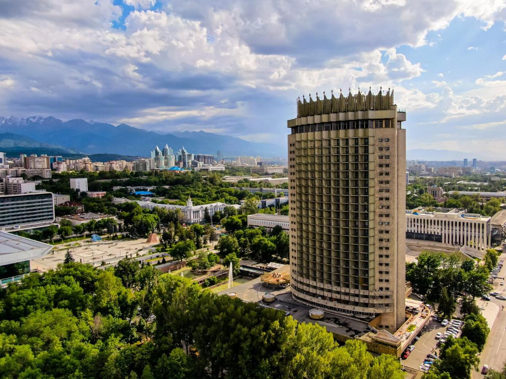

Kazakhstan Express

Kazakhstan Express is a hotel in Almaty, 300 metres from attractions such as Palace of the Republic. Amenities include a terrace, a restaurant, a bar and free private parking. The 3-star hotel offers views of the city. Guests can make use of a sauna and a hammam. Guests have access to a 24-hour front desk, an airport shuttle or food and beverage delivery service, and free Wi-Fi access throughout.
The air-conditioned rooms at Kazakhstan Express feature a safe and a TV. Other amenities include a desk, a kettle and a private bathroom with a shower. The private bathroom includes a bathtub, free toiletries and a hairdryer. Kazakhstan Express provides guests with bed linen and towels.
Kazakhstan Express offers a buffet or continental breakfast.
Guests can make use of a hairdressing salon and a business area.
Popular attractions near Kazakhstan Express include the 28 Panfilov Guardsmen Park, the Voznesensky Cathedral and the Kazakhstan Independence Monument. Almaty International Airport is 15 kilometres away.
Couples particularly like the location - they rated the accommodation in this area for travelling as a couple at 9.5.
Facilities: Free Wi-Fi, Swimming Pool, Gym, Very good breakfast, Spa & Wellness Centre
Room Types:
- Standard Room - $70 per night
- Deluxe Room - $110 per night
- Executive Suite - $200 per night